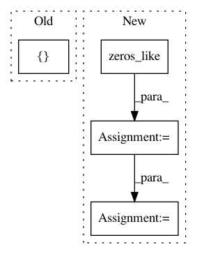

c1a72b36444c8027c27c2dc02dc03d5b69a5e389,keras/layers/recurrent_convolutional.py,LSTMConv2D,get_constants,#LSTMConv2D#Any#,482
Before Change
constants = []
if 0 < self.dropout_U < 1:
ones = K.ones_like(K.reshape(x[:, 0, 0], (-1, 1)))
ones = K.concatenate([ones] * self.output_dim, 1)
B_U = [K.in_train_phase(K.dropout(ones, self.dropout_U), ones)
for _ in range(4)]
constants.append(B_U)
After Change
def get_constants(self, x):
constants = []
if 0 < self.dropout_U < 1:
ones = K.zeros_like(x)
ones = K.sum(ones, axis=1)
ones = self.conv_step(ones, K.zeros(self.W_shape),
border_mode=self.border_mode)
ones = ones + 1
B_U = [K.in_train_phase(K.dropout(ones, self.dropout_U), ones)
for _ in range(4)]
constants.append(B_U)
else:
In pattern: SUPERPATTERN
Frequency: 3
Non-data size: 4
Instances
Project Name: keras-team/keras
Commit Name: c1a72b36444c8027c27c2dc02dc03d5b69a5e389
Time: 2016-10-13
Author: jeanmichel.arbona@gmail.com
File Name: keras/layers/recurrent_convolutional.py
Class Name: LSTMConv2D
Method Name: get_constants
Project Name: shenweichen/DeepCTR
Commit Name: 5a9e9622a7309794cc0cf511080fc2bd6b73a20a
Time: 2019-11-06
Author: wcshen1994@163.com
File Name: deepctr/layers/sequence.py
Class Name: SequenceMultiplyLayer
Method Name: call
Project Name: keras-team/keras
Commit Name: 9efe17aeeafc6d8c1406a48f82fc63731d4b2b6c
Time: 2016-02-29
Author: francois.chollet@gmail.com
File Name: keras/layers/recurrent.py
Class Name: Recurrent
Method Name: get_initial_states